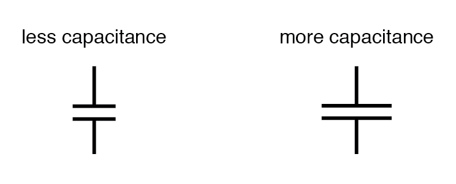
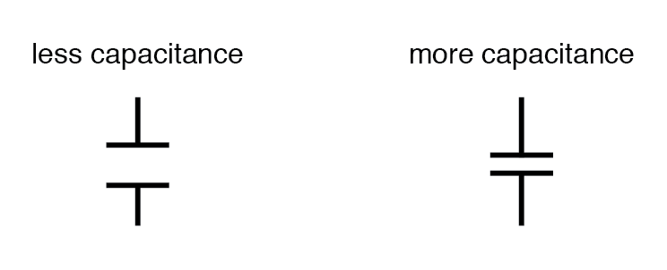
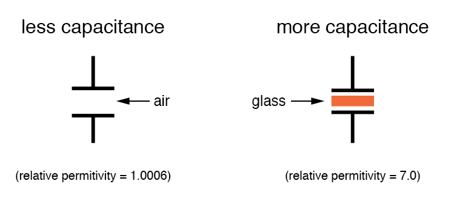
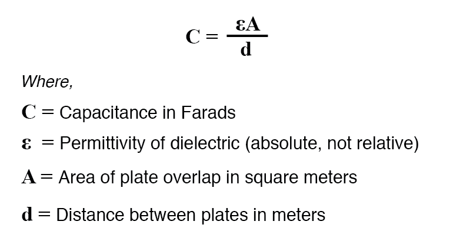
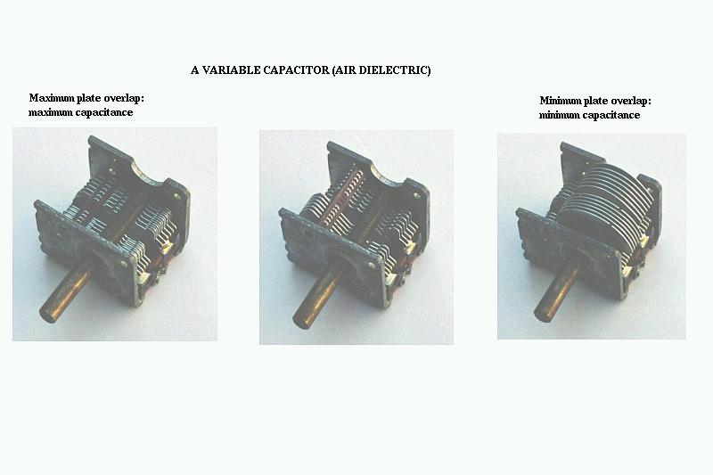

There are three basic factors of capacitor construction determining the amount of capacitance created. These factors all dictate capacitance by affecting how much electric field flux (relative difference of electrons between plates) will develop for a given amount of electric field force (voltage between the two plates):
PLATE AREA: All other factors being equal, greater plate area gives greater capacitance; less plate area gives less capacitance.
Explanation: Larger plate area results in more field flux (charge collected on the plates) for a given field force (voltage across the plates).

PLATE SPACING: All other factors being equal, further plate spacing gives less capacitance; closer plate spacing gives greater capacitance.
Explanation: Closer spacing results in a greater field force (voltage across the capacitor divided by the distance between the plates), which results in a greater field flux (charge collected on the plates) for any given voltage applied across the plates.

DIELECTRIC MATERIAL: All other factors being equal, greater permittivity of the dielectric gives greater capacitance; less permittivity of the dielectric gives less capacitance.
Explanation: Although it's complicated to explain, some materials offer less opposition to field flux for a given amount of field force. Materials with a greater permittivity allow for more field flux (offer less opposition), and thus a greater collected charge, for any given amount of field force (applied voltage).

“Relative” permittivity means the permittivity of a material, relative to that of a pure vacuum. The greater the number, the greater the permittivity of the material. Glass, for instance, with a relative permittivity of 7, has seven times the permittivity of a pure vacuum, and consequently will allow for the establishment of an electric field flux seven times stronger than that of a vacuum, all other factors being equal. The following is a table listing the relative permittivities (also known as the “dielectric constant”) of various common substances:
Material | Relative permittivity (dielectric constant) |
|---|---|
| Vacuum | 1.0000 |
| Air | 1.0006 |
| PTFE, FEP (“Teflon”) | 2.0 |
| Polypropylene | 2.20 to 2.28 |
| ABS resin | 2.4 to 3.2 |
| Polystyrene | 2.45 to 4.0 |
| Waxed paper | 2.5 |
| Transformer oil | 2.5 to 4 |
| Hard Rubber | 2.5 to 4.80 |
| Wood (Oak) | 3.3 |
| Silicones | 3.4 to 4.3 |
| Bakelite | 3.5 to 6.0 |
| Quartz, fused | 3.8 |
| Wood (Maple) | 4.4 |
| Glass | 4.9 to 7.5 |
| Castor oil | 5.0 |
| Wood (Birch) | 5.2 |
| Mica, muscovite | 5.0 to 8.7 |
| Glass-bonded mica | 6.3 to 9.3 |
| Porcelain, Steatite | 6.5 |
| Alumina | 8.0 to 10.0 |
| Distilled water | 80.0 |
| Barium-strontium-titanite | 7500 |
An approximation of capacitance for any pair of separated conductors can be found with this formula:

A capacitor can be made variable rather than fixed in value by varying any of the physical factors determining capacitance. One relatively easy factor to vary in capacitor construction is that of plate area, or more properly, the amount of plate overlap.
The following photograph shows an example of a variable capacitor using a set of interleaved metal plates and an air gap as the dielectric material:

As the shaft is rotated, the degree to which the sets of plates overlap each other will vary, changing the effective area of the plates between which a concentrated electric field can be established. This particular capacitor has a capacitance in the picofarad range and finds use in radio circuitry.